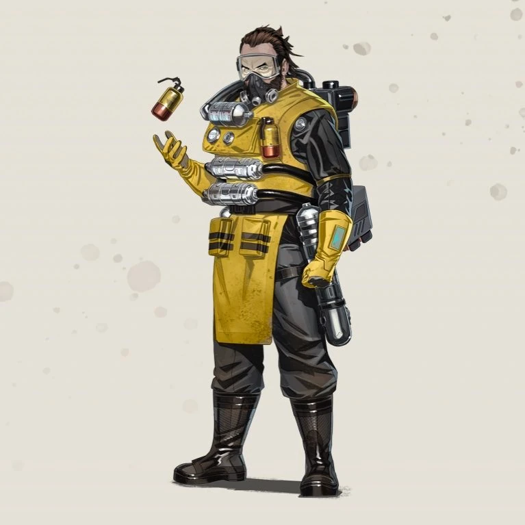
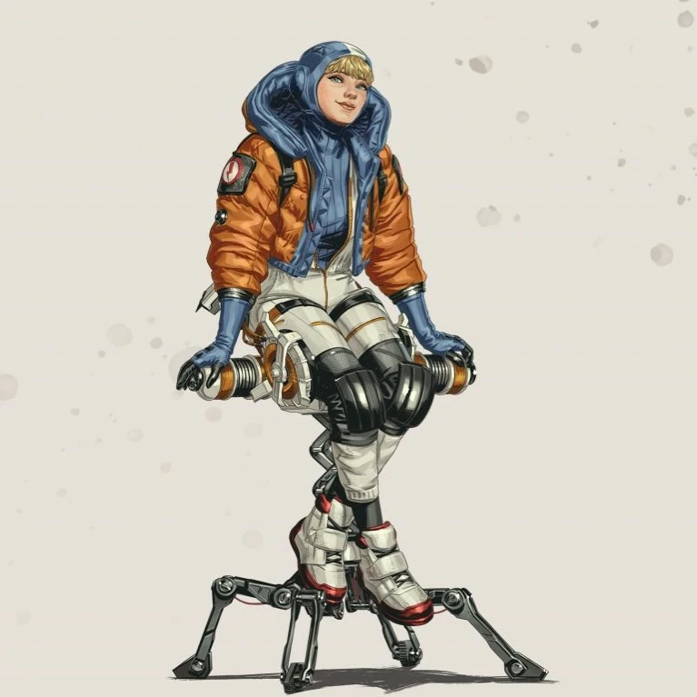
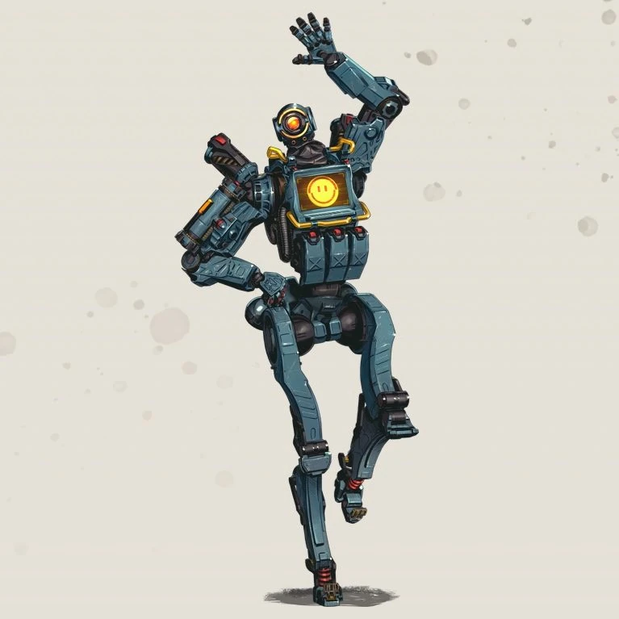

I wanna talk about character design for a moment.
These characters are from one of my favorite videogames from an aesthetic design standpoint:
Apex Legends.
I love Respawn Entertainment’s Apex Legends, from is glidey movement to its immaculate environment design.
Respawn extended that design to its weapons and its characters.
Caustic.

A fat white guy with slicked back hair.
He’s a creep.
He’s a sadist who throws poison gas traps.
A perfect candidate for the blood sport.
Can I be frank?
I don’t actually like him as a character.
I think he’s uninteresting.
He’s a ‘tank’ in the game - he moves slow and takes slightly less damage - but he doesn’t feel the way I want a tank to feel.
His color scheme is ugly.
His hair is ugly.
His face is ugly.
Sorry, Caustic. I’m being really mean right now but I gotta be honest.
And his ability is boring.
Throwing gas traps that don’t kill anybody isn’t an impressive ability.
His character design is a good example of character design that “works” for a character I don’t like.
Wattson.

Ooh boy, I love Wattson.
And not just because she’s cute and I’d want to have her as my french well-dressed perky girlfriend.
(Who would probably give me a static shock each time I hugged her.)
But because her enthusiasm, electric-themed design, and wardrobe are neat and perfect.
Tom Casiello, who was a part of the creation of Wattson and the sixteen other starting Apex Legends characters, commented on Wattson’s design on twitter. He said that in early concept art, she had a robotic arm.[1]
Personally I wouldn’t mind if she had a robotic arm, but I think she is better without one.
I love everything from her color scheme, to her thick puffy jacket, and somehow her astronaut head thing works.
Everything in her design and many things in-game revolve around electricity.
She is also one of three characters in Apex who has a unique revive animation that revolves around her theme.
She uses her equipment to defibrillate her teammate to get them up.[2]
Her little gestures, too. When she lays down her electric fences she does a little wave.
It’s adorable.
It’s also peak when a character who has gentle gestures and a lovely, almost above-the-violence air about them commands total control of the flow of battle because of the placement of their ordinance.
Similar in theory to Caustic from a utility perspective, but plays completely differently.
And also looks cute while doing it <3
Pathfinder.

is a character whose entire design pivots around personality.
He waves at you, he is obsessed with high-fives[3], and he encourages his team with an endless positivity.
His character design also involves engineering.
He isn’t designed to look like a badass robot that kills people.
He looks very utilitarian and sparse.
I love the robot design from Respawn entertainment, where you can see the mechanics of how the grapple hook works in his body.
From a gameplay perspective, Pathfinder isn’t about laying traps or controlling zones. He’s all about movement.
He grapples around and he sets up ziplines so his team can clear distance.
Mobility is his strong suit, and he has absolutely zero offensive abilities.
He’s an excellent asset in a game where the map is big.
But honestly I just love the guy for his enthusiasm.
[1] https://x.com/tommiecas/status/1253474177920557056
[2] https://apexlegends.fandom.com/wiki/Wattson#Trivia
[3] His interest in high-fives is a reference to a MRVN from Titanfall 2 who would attempt to high-five players on the dropship, only to become sad when it receives none. https://apexlegends.fandom.com/wiki/Pathfinder#History
The images on this page come from Apex Legends or from websites created and owned by Electronic Arts Inc. or Respawn Entertainment, who hold the copyright of Apex Legends. All trademarks and registered trademarks present are proprietary to Electronic Arts Inc..
The use of images to illustrate articles concerning the images is believed to qualify as fair use under United States copyright law, as such display does not significantly impede the right of the copyright holder to sell the copyrighted material.